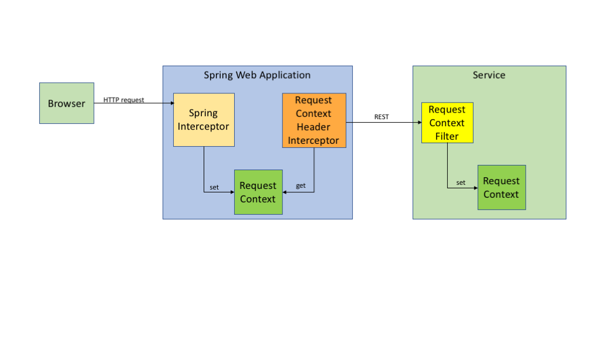

|
RequestContextLog4j-Audit incorporates Log4j ThreadContext variables as a way of including information into audit events that is common throughout the application. While usage of a RequestContext is not required, the use of one should be considered a best practice. In a typical application that might use a ThreadContext Map, it will place variables in the Map so that they will be included in all Log4j log events. Log4j Audit takes advantage of this so that variables placed into the ThreadContext Map will be automatically be available in audit events as well. In addition, through the use of the RequestContextFilter and RequestContextHeaderInterceptor, these variable will automatically be passed from a client application to a REST service. A common use case is to include a request id and/or a session id in the RequestContext. By generating these variables when a user first logs in and at the start of every action a user takes all log eveents, including audit events, can be correlated in the application and through all the microservices the application might use. This could also include things like a client account number (especially useful in multi-tenant applications), the user’s login id, and the ip address of the user. In a services-based application these values need to be populated at the point of entry to the application and then passed to all the service endpoints. It is especially useful to create artificial request and session ids so that all the activities across all the servers can be correlated to the user’s request and/or session. When defining audit events there are generally two types of data included in the event. The first are data elements that are specific to a particular or small set of log events. The second are data elements that would be expected to be included in all audit events. The second type are normally included in the RequestContext. Although they do not have to be placed in the RequestContext doing so reduces the effort require to create an audit event since only the data specific to that event needs to be added by the application. Another use case for RequestContext or ThreadContext Map variables is when lower level components need access to data elements that the components calling them have no use for. For example, an application may shard its database based on a customer’s account number. A particular component may not need the account number in any of its operations but would be forced to pass it through so the database access component could use it to determine which database to use. By using the RequestContext the intermediate component no longer has to be aware of what customer it is performing work for. One aspect of the Log4j ThreadContext should be noted. When an application directly creates a thread ThreadContext variables are NOT automatically provided to that thread. Applications may make use of the RequestContext when determining which variables in the ThreadContext Map should be passed to the child thread. Log4j provides a convenient way to identify the RequestContext variables such that they can be reliably accessed by the application and passed to the target services. To do this the application should create a RequestContext class that resembles RequestContext.java in the log4j-audit-sample project. A portion of that is shown here: /**
* Defines all the variables that an application needs to be available in the ThreadContext for audit logging and
* general application usage.
*/
@HeaderPrefix("mycorp-context-")
public final class RequestContext {
@ClientServer
public static final String REQUEST_ID = "requestId";
@ClientServer
public static final String SESSION_ID = "sessionId";
@Local
public static final String CALLING_HOST = "callingHost";
public static final String HOST_NAME = "hostName";
private static final String LOCAL_HOST_NAME = NetUtils.getLocalHostname();
/**
* The Supplier is used to populate the hostName key after the hostName value from the caller has been
* placed into the callingHost map entry.
*/
@Chained(fieldName = HOST_NAME, chainedFieldName = CALLING_HOST)
public static final Supplier<String> LOCAL_HOST_SUPPLIER = () -> LOCAL_HOST_NAME;
}
RequestContext AnnotationsHeaderPrefixThe HeaderPrefix annotation is used to define the string to be prepended to the names of the ThreadContext variables when they are passed to a REST service. The default value is “request-context-”. Mapping AnnotationsThe ClientServer, Local, and Chained annotations represent the 3 types of RequestContext variables.
RequestContext methodsThe public static set and get methods shown in RequestContext.java are optional but provide a convenient way to access the variables stored in Log4j’s ThreadContext Map. It should also be noted that it is possible to allow the RequestContext variables to be copied into an instance of the RequestContext so they can be passed to a child thread where the instance will be used to populate that thread’s ThreadContext Map. See the save and restore methods in the sample RequestContext.java for an example of how that can be done. Transporting the RequestContextThis diagram shows how the RequestContext is created at the beginning of every request where it is used by the application (including audit logging). It is then converted to HTTP headers by a Spring Interceptor (provided by Log4j Audit) that are passed on a REST call to a service. The service then uses a servlet filter (provided by Log4j Audit) to create a RequestContext for use by the service. This same mechanism can be applied to other kinds of distributed requests. For example, when using Spring AMQP the RequestContext fields can be captured as AMQP headers using a MessagePostProcessor and the RequestContext recreated in the consumer using an Interceptor.  Initializing the RequestContextThe RequestContext should be initialized at the beginning of every request and cleared at the end of the request. In a web application, typically some data is captured during login and is captured in the HTTP session. In a web application that does not use an HTTP session this data would be stored wherever the equivalent of session data is stored (for example, the local storage of the browser). This session data is then copied into the RequestContext on each request in a ServletFilter or a Spring Interceptor similar to the example that follows. Although this example uses Spring it could be implemented as a Servlet Filter or something similar. public class RequestContextInterceptor implements HandlerInterceptor {
private static Logger logger = LogManager.getLogger(RequestContextInterceptor.class);
private ThreadLocal<Long> startTime = new ThreadLocal<>();
@Override
public boolean preHandle(HttpServletRequest request,
HttpServletResponse response, Object handler) throws Exception {
boolean success = true;
String uri = request.getRequestURI();
String queryString = request.getQueryString();
HttpSession session = request.getSession(true);
if (!uri.contains("login") {
// SessionData will be populated during login.
SessionData sessionData = SessionData.getSessionData(session);
if (sessionData == null) {
logger.info("no account logged in - send to login page");
response.sendRedirect("/login");
success = false;
} else {
startTime.set(System.nanoTime());
long corpAcctNbr = sessionData.getCorporateAccountNumber();
RequestContext.getRequestId();
RequestContext.setCorpAcctNumber(corpAcctNbr);
RequestContext.setUserId(Long.toString(sessionData.getUserId()));
RequestContext.setIpAddress(request.getRemoteAddr());
RequestContext.setOnBehalfOf(sessionData.getOnBehalfOf());
RequestContext.setOnBehalfOfAccount(sessionData.getOnBehalfOfAccount());
RequestContext.setSessionId(sessionData.getSessionId());
RequestContext.setLoginId(sessionData.getLoginId());
String localHost = NetUtils.getLocalHostname();
if (localHost != null && !localHost.equals("UNKNOWN_HOST")) {
RequestContext.setHostName(localHost);
}
RequestContext.setProductName("Application");
RequestContext.setProductVersion("3");
}
} else {
RequestContext.setIpAddress(request.getRemoteAddr());
startTime.set(System.nanoTime());
}
return success;
}
@Override
public void postHandle(HttpServletRequest request,
HttpServletResponse response, Object handler,
ModelAndView modelAndView) throws Exception {
}
@Override
public void afterCompletion(HttpServletRequest request,
HttpServletResponse response, Object handler, Exception ex)
throws Exception {
Long start = startTime.get();
if (start != null) {
long elapsed = System.nanoTime() - start;
startTime.remove();
StringBuilder sb = new StringBuilder("Request ").append(request.getRequestURI()).append(" completed in ");
ElapseUtil.addElapsed(elapsed, sb);
logger.info(sb.toString());
}
RequestContext.clear();
}
}
Passing the RequestContext to a Spring REST ServiceLog4j Audit provides an Interceptor that can be used with Spring web applications that will convert RequestContext variables to HTTP headers. The RequestContextHeaderInterceptor can be created by a java configuration method such as: @Bean
public List<ClientHttpRequestInterceptor> createInterceptor() {
List<ClientHttpRequestInterceptor> list = new ArrayList<>();
RequestContextMappings mappings = new RequestContextMappings(RequestContext.class));
list.add(new RequestContextHeaderInterceptor(mappings);
return list;
}
Assuming spring-web is being used, the returned list should then be added to the RestTemplate. If Spring is not being used a component similar to the RequestContextHeaderInterceptor that is appropriate for the application could be used instead. The target application then needs to convert the headers back into RequestContext variables by creating a class that extends WebApplicationInitializer that does: @Override
public void onStartup(ServletContext servletContext) throws ServletException {
RequestContextFilter filter = new RequestContextFilter(RequestContext.class);
servletContext.addFilter("requestContextFilter", filter).addMappingForUrlPatterns(null, true, "/*");
}
As an added benefit, the RequestContextFilter will log the beginning and end of each request and log the elapsed time at the end of the request. Although the preceding example uses Spring the code within the method will work for any Java web application that uses version 3.0 of the servlet spec or greater, provided it is called as the application is being initialized. Configuring Logging to Include RequestContext VariablesWhen logging RequestContext variables simply configure log4j2.xml to include specific ThreadContext variables or all of them using the %X pattern converter or by setting the includeMdc, includeThreadContext, or properties attribute to true on the desired Layout. |